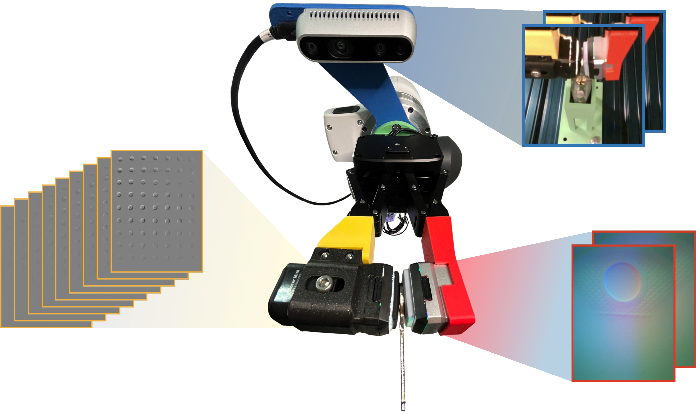
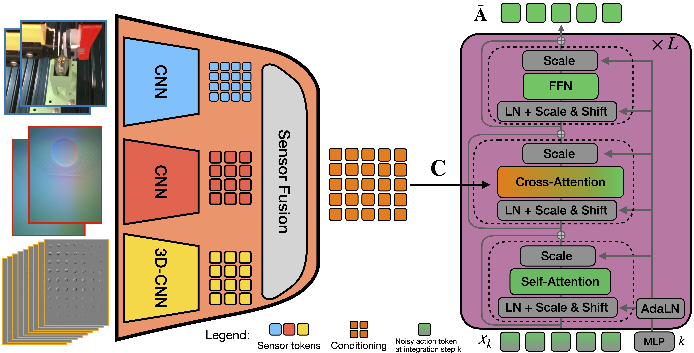
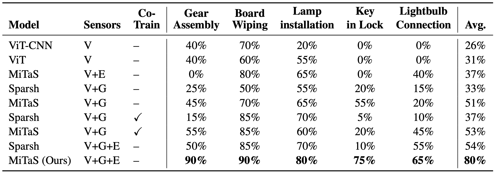
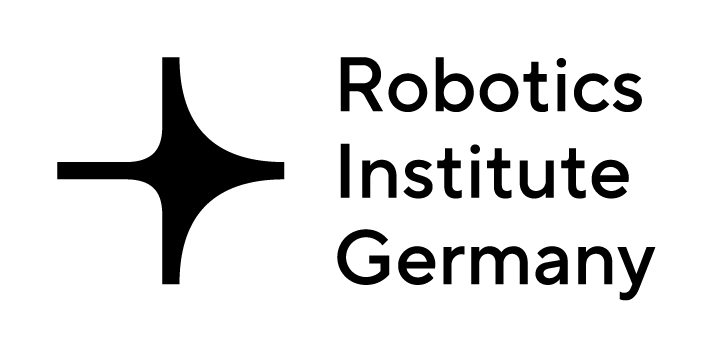
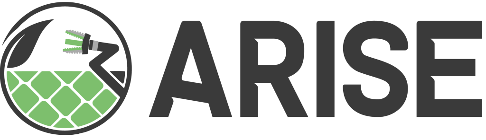

Sensor Attention Analysis

Attention weights during lamp installation for vision, GelSight Mini, and Evetac over task time. Vision is highest during reaching, Evetac during insertion, and GelSight Mini during screwing.
Contact-rich manipulation needs more than vision. MiTaS fuses multiple tactile modalities at different temporal resolutions and trains a flow-matching policy that outperforms vision-only and standard visuo-tactile baselines on five real-world tasks.

Touch sensing is essential for solving a wide variety of manipulation tasks. While there exists a wide range of tactile sensors with different properties, exploiting the fusion of multiple heterogeneous tactile sensors to improve manipulation learning remains underexplored. We present Multi-Resolution Tactile Sensing (MiTaS), a representation framework that leverages multiple tactile sensors operating at different temporal resolutions in order to solve complex contact-rich manipulation tasks. We propose a novel architecture using modality-specific convolutional stems and transformer-based fusion that effectively fuses information from an RGB camera stream, a vision-based GelSight Mini sensor and a high-frequency event-based Evetac sensor. This multi-sensor representation then conditions a flow-matching policy for downstream task solving. Experimental results across five contact-rich manipulation tasks demonstrate the effectiveness of multi-resolution tactile features in imitation learning. MiTaS achieves an average success rate of 80%, while vision-only (31%) and visual-tactile (54%) baselines cannot solve the task reliably. Co-training a visuo-tactile model with multi-tactile data boosts performance by over 10% in certain tasks, without having access to the Evetac sensor during policy evaluation. A detailed sensor-reading and attention analysis reveals the importance of different sensors throughout task execution, validating our multi-resolution tactile sensing approach.

Overview of the MiTaS architecture: Modality-specific CNN stems encode Vision, GelSight, and Evetac sensors into token embeddings. These tokens are fused through transformer-based attention mechanisms and form the condition for a flow matching policy. The policy does not receive the robot state and must infer the delta position prediction solely from sensor readings.
Attention weights during lamp installation for vision, GelSight Mini, and Evetac over task time. Vision is highest during reaching, Evetac during insertion, and GelSight Mini during screwing.

MiTaS with all three sensor modalities (V+G+E) achieves an 80% average success rate across five contact-rich tasks, substantially outperforming vision-only (31%) and visual-tactile (54%) baselines. Co-training further improves visuo-tactile models on selected tasks even without Evetac at test time.
@misc{krohn2026mitas,
title={Multi-Resolution Tactile Imitation Learning for Contact-Rich Robotic Manipulation},
author={Rickmer Krohn and Erik Helmut and Niklas Funk and Jan Peters and Vignesh Prasad and Georgia Chalvatzaki},
year={2026},
eprint={2606.06281},
archivePrefix={arXiv},
primaryClass={cs.RO},
url={https://arxiv.org/abs/2606.06281},
}This research is funded by the German Research Foundation (DFG) Emmy Noether Programme (CH 2676/1-1), the EU’s Horizon Europe project ARISE (Grant no.: 101135959), the German Federal Ministry of Education and Research (BMBF) project “RiG” (Grant no.: 16ME1001) and the European Research Council (ERC) project “SIREN” (Grant No.: 101163933). The authors gratefully acknowledge the scientific support and HPC resources provided by the Erlangen National High Performance Computing Center (NHR@FAU) of the Friedrich-Alexander-Universität Erlangen-Nürnberg (FAU). The hardware is funded by the German Research Foundation (DFG).

